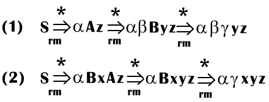

Стековая реализация ПС-анализа.
Существует две проблемы при синтаксическом анализе методом обрезки основ. Первая заключается в обнаружении подстроки для свертки в правосентенциальной форме, а вторая – в определении, какая именно продукция должна быть выбрана, если имеется несколько продукций с соответствующей подстрокой в правой части. Перед тем как ответить на эти вопросы, сначала рассмотрим структуры данных, используемые в ПС-анализаторе.
Достаточно удобный путь реализации ПС-анализатора состоит в использовании стека для хранения символов грамматики и входного буфера для хранения анализируемой строки. В качестве маркера дна стека мы используем $, и этот же символ является маркером правого конца входной строки. Изначально стек пуст, а входной буфер содержит строку w:
Cтек Вход
$ w$
Синтаксический анализатор работает путем переноса нуля или нескольких символов в стек до тех пор, пока на вершине стека не окажется основа β. Затем он свертывает β к левой части соответствующей продукции. Синтаксический анализатор повторяет этот цикл, пока не будет обнаружена ошибка или он не придет в конфигурацию, когда в стеке находится только стартовый символ, а входной буфер пуст:
Стек Вход
$S $
Попав в эту конфигурацию, синтаксический анализатор прекращает работу и сообщает об успешном разборе входной строки.
Пример 12.c
Пройдем пошагово все действия, выполняемые синтаксическим анализатором при разборе входной строки id1+id2*id3 грамматики (12.1), используя первое порождение из примера 12.a. Последовательность действий показана в таблице 12.2. Заметим, что поскольку грамматика (12.1) имеет два правых порождения для данной входной строки, существует еще одна последовательность переносов и сверток, которые может выполнить анализатор.
Таблица 12.2. Конфигурации ПС-анализатора для входной строки id1+id2*id3
|
|
Стек |
Вход |
Действие |
|
(1) |
$ |
id1+id2*id3$ |
Перенос |
|
(2) |
$id1 |
+id2*id3$ |
Свертка по Е® id |
|
(3) |
$E |
+id2*id3$ |
Перенос |
|
(4) |
$E + |
id2*id3$ |
Перенос |
|
(5) |
$E + id2 |
*id3$ |
Свертка по Е® id |
|
(6) |
$E + E |
*id3$ |
Перенос |
|
(7) |
$E + E * |
id3$ |
Перенос |
|
(8) |
$E + E * id3 |
$ |
Свертка по Е® id |
|
(9) |
$E + E * E |
$ |
Свертка по Е® E * E |
|
(10) |
$E + E |
$ |
Свертка по Е® E + E |
|
(11) |
$E |
$ |
Допуск |
Основными операциями синтаксического анализатора являются перенос и свертка, но на самом деле ПС-анализатор может выполнять четыре действия: (1) перенос, (2) свертка, (3) допуск, (4) ошибка.
1. При переносе очередной входной символ переносится на вершину стека.
2. При свертке синтаксический анализатор распознает правый конец основы на вершине стека, после чего он должен найти левый конец основы и принять решение о том, каким нетерминалом заменить основу.
3. При допуске синтаксический анализатор сообщает об успешном разборе входной строки.
4. При ошибке синтаксический анализатор обнаруживает ошибку во входном потоке и вызывает программу восстановления после ошибок.
Рассмотрим очень важный факт, который поясняет использование стека в ПС-анализаторе: основа всегда находится на вершине стека и никогда – внутри него. Это становится очевидным при рассмотрении возможных видов двух последовательных шагов в любом правом порождении. Эта два шага могут быть следующими:

В случае (1) А заменяется на βВу, а затем крайний справа нетерминал В в правой части – на γ. В случае (2) А также заменяется первым, но в этот раз правая часть представляет собой строку γ, состоящую только из терминалов. Следующий крайний справа нетерминал В находится слева от γ.
Рассмотрим случай (1) в обратном порядке, начиная с момента, когда ПС-анализатор достиг конфигурации
Стек Вход
$αβγ yz$
Теперь синтаксический анализатор свертывает основу γ в В и переходит в конфигурацию
Стек Вход
$αβB yz$
Поскольку B является крайним справа нетерминалом в αβByz, правый конец основы строки αβByz не может находиться внутри стека. Таким образом, синтаксический анализатор может перенести строку y в стек для получения конфигурации
Стек Вход
$αβBy z$
в которой βВу является основой и свертывается в А.
В случае (2) в конфигураций
Стек Вход
$αγ xyz$
основа γ находится на вершине стека. После свертки γ в В синтаксический анализатор может перенести строку ху для получения следующей основы у на вершине стека:
Стек Вход
$αBxy z$
Теперь синтаксический анализатор свертывает у в А.
В обоих случаях после свертки синтаксический анализатор для получения очередной основы переносит нуль или несколько символов в стек. Синтаксический анализатор никогда не заглядывает внутрь стека в поисках правого края основы. Все это делает стек особенно удобным для использования в реализации ПС-анализатора. Впрочем, мы все еще не выяснили, каким образом осуществлять выбор очередного действия для корректной работы синтаксического анализатора.